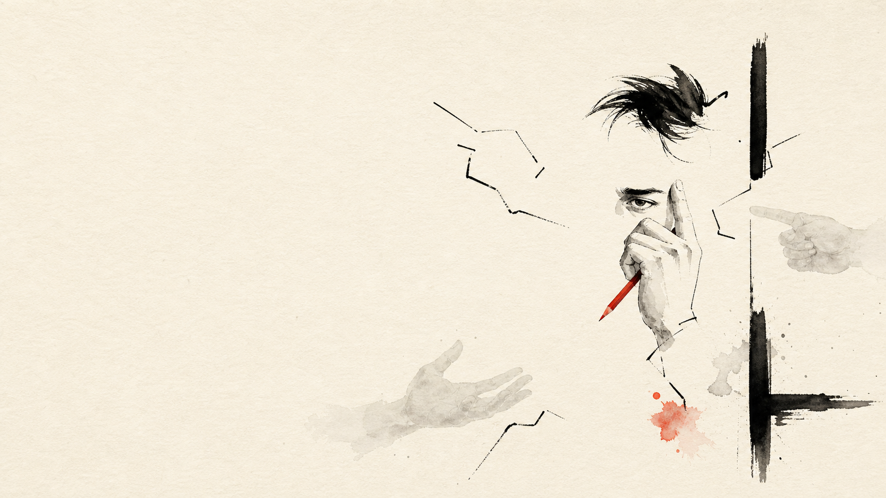
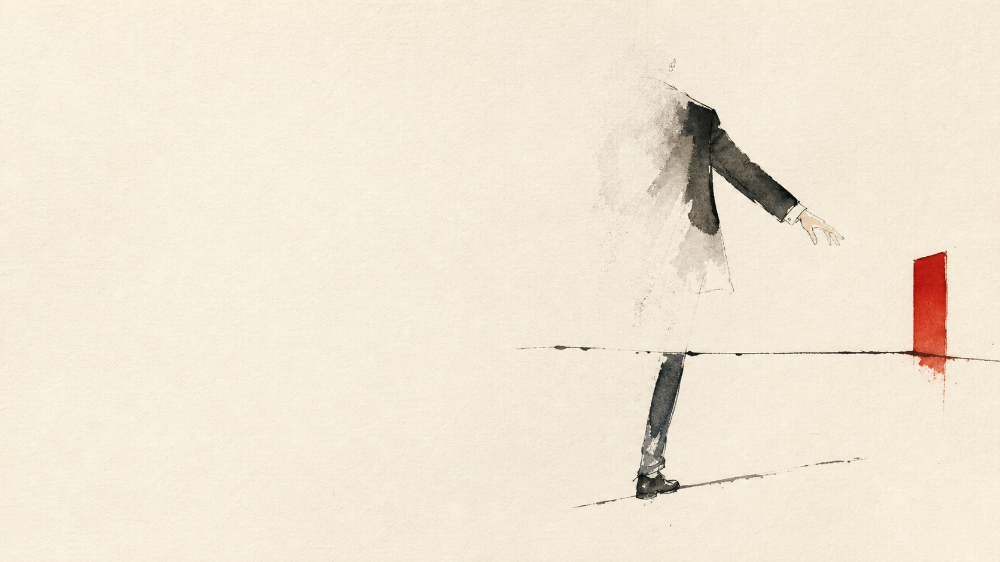

顧問／品牌服務
核心：專業人力、認知與陪跑。
先拆：執案、業務、PM、AM、營運空間。
報價第三講 · 價格走廊
報價不是找到市場唯一答案，而是看懂自己承擔的成本、責任、協作與價值。
大部分的人都在猜一個數字
不知道對方的成本結構、品質與責任。
只看執行時間，忽略價值與認知勞動。
沒有底線，也沒有上行證據。
真正的報價不是一個點，而是一條有上下邊界的價格走廊。
AI 讓執行變快
AI 改變成本結構；真正能把價格往上拉的，仍是可證明的價值。
第一講算成本，這一講把成本放回生意裡
執案占比不是從網路抄來的毛利率，而是企業為了成交、管理、關係、固定營運與再投資所設計的收入分配。
為什麼 Zeal 的顧問業除以 0.4？
剩下的 40% 還沒有進老闆口袋
固定薪資、租金、行政、會計、法務、工具與折舊。
發票稅、所得稅準備、股東分配與保留盈餘。
員工福利、品質優化、研發、行銷與經銷飛輪。
價格壓到只夠執行，企業就失去長期變好的能力。
同一原理，不同分母
核心：專業人力、認知與陪跑。
先拆：執案、業務、PM、AM、營運空間。
核心：材料、工班、監工、返工、保固。
先拆：代收工程款與真正服務收入。
核心：媒體、素材、操盤、審稿、AM。
先拆：廣告費與代理服務營收。
先畫出自己的100 元收入分配圖，再決定要除以多少。

客戶會改變真正的執案成本
目標反覆、決策斷裂、資料不足、缺乏商業認知，都會讓前期對齊與策略說明持續吞噬時間、心力與精神。
不要問「難不難搞」，要問「哪裡會增加負荷」
只有會議、訪談、文件或往來訊息支持的「已驗證」項目，才能進正式分數。
從 ×1 到 ×3，不再憑感覺
Museon 顧問實務初始模型，非市場公定公式；同一負荷若已計入執案成本，不得重複加分。
分數高，不一定只能加價
先付費診斷、先培訓、先整理資料、先建立驗收標準。
指定單一決策人、訂變更單、分清客戶責任、工期順延。
無法移除的殘餘負荷，才保留分數並提高報價底線。
真正成熟的報價，不只是把風險變貴，也會把風險變少。

成本定底線，價值決定往上走多遠
底線高於價值 1/3，合作結構不成立
執案成本 20 萬 ÷ 40% × 3
可歸因價值 300 萬 × 1/3
150 萬 ＞ 100 萬：縮小範圍、先診斷、先培訓、重配責任，或不接。
拿一位真實客戶，跑完一次
執案與收入分配
＋教育、決策、陪跑負荷
材料工班與服務收入分流
＋變更、監工、驗收負荷
媒體費與服務營收分流
＋審稿、資料、承接負荷
成本只負責阻止你報得太低；價值才負責決定你能報多高。
只留下兩個最能複用的核心工具
收入分配＋10 題勾選＋走廊試算＋接／改／拒核准。人類決定成本口徑、證據、倍數與最終價格。
下載工作簿讀取成本地圖與價值證據，逐題標示已驗證／假設／待確認，試算走廊並提出消除、轉移、接受風險的選項。
下載 Skill第三講決定「可以報多少」；第四講處理「如何讓客戶理解、比較並做出選擇」。